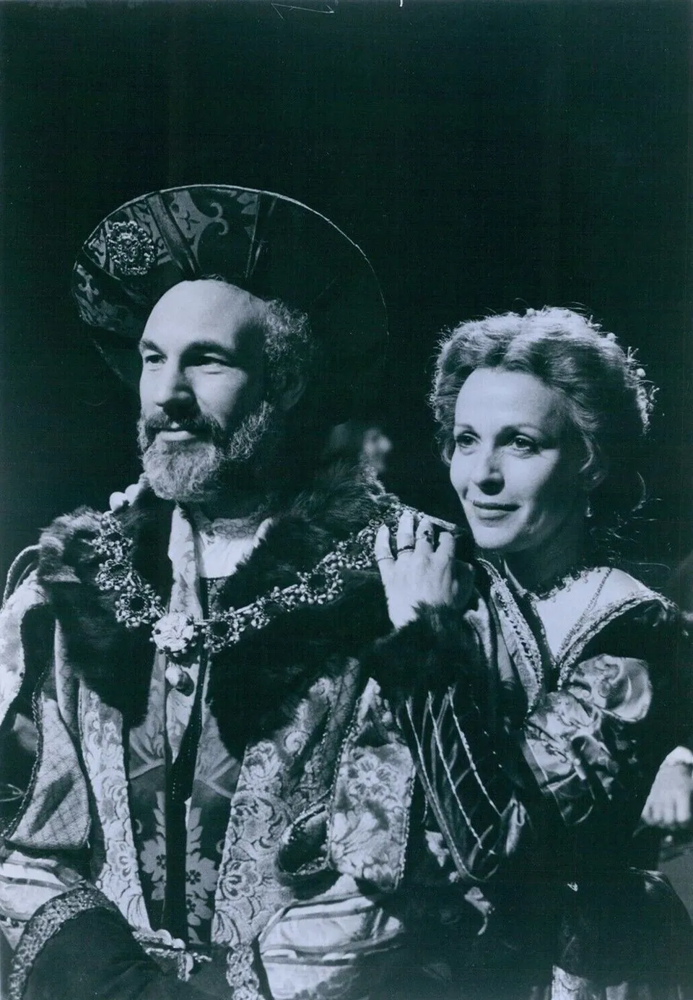
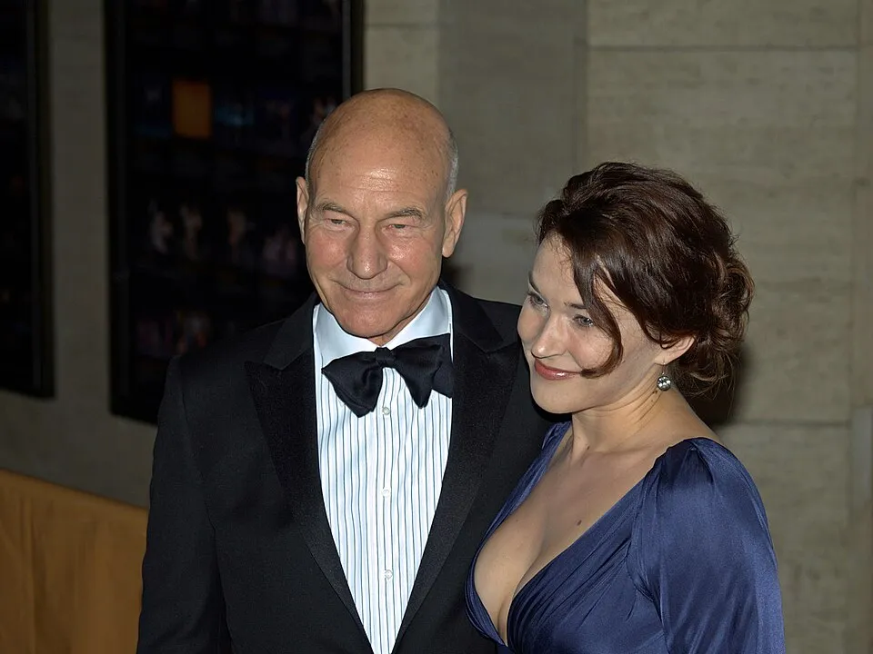
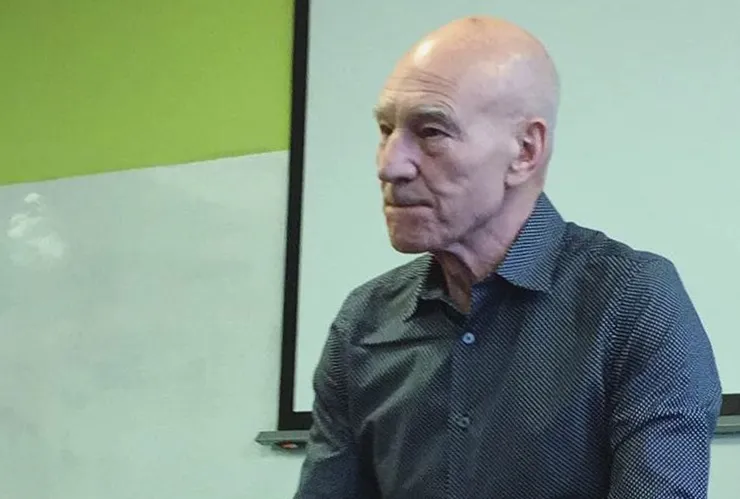

Special Report
LOS ANGELES, Oct. 29, 2026 —
Sir Patrick Stewart died Wednesday at his home in Los Angeles, his family announced Thursday on his verified X account. NBC News reported that he was 86. (Our news story is here.)
His family's notice describes him as "a son of Mirfield in the West Riding of Yorkshire" who "travelled from the Royal Shakespeare Company to an equally acclaimed career spanning six decades on Broadway, the silver screen and television."
The Royal Shakespeare Company
Stewart "joined the RSC in 1966," according to a Royal Shakespeare Company press release. The company lists his Shakespeare roles as including "King John (1970), Oberon (A Midsummer Night's Dream, 1977), Shylock (The Merchant of Venice, 1978 and 2011), Titus Andronicus (1981), Henry IV (1982), Antony (Antony and Cleopatra, 2006), Prospero (The Tempest 2006) and Claudius (Hamlet, 2008)."
An archived RSC biography says he "is an Honorary Associate Artist of the RSC, having been made an Associate Artist in 1967," and "was a core member of the Company from 1966 to 1982."

.jpg){kind=link}
Captain Picard and Professor X
To television and film audiences, he was Captain Jean-Luc Picard of Star Trek: The Next Generation and Professor Charles Xavier of the X-Men films. The RSC's release notes that "his TV and film credits include the X-Men series and Star Trek: The Next Generation."
His family wrote that he "brought hope not only to the far reaches of the Marvel Cinematic Universe, but into science fiction's most iconic final frontier aboard the Starship Enterprise."
The notice closes with his own words about Picard, from his book Making It So: A Memoir: "Like me, Jean-Luc has lived an unusual life that has taken him far beyond the bounds of normal human experience. But he is also someone who has remained true to his earthbound roots, for they are what gave him his identity. In the end, he feels the call of home, as do I."


Sir Patrick
No licensed photograph of his investiture was available to us. Stewart was made a Knight Bachelor in the 2010 New Year Honours. The official U.K. government list records the honour for "Mr Patrick STEWART OBE," with the citation: "Actor. For services to Drama." The honours list was published in The London Gazette.


Sunny, and a life of advocacy
His family wrote that his "professional accomplishments were humbly matched by his philanthropy and activism on behalf of human rights, survivors of domestic violence, global refugees, veterans' mental health services, and animal welfare, particularly his cherished foster pitties."
"He was a Knight, Chancellor, motor sport enthusiast, and lifelong Huddersfield Football fan," the notice says. "He will be remembered for the dignity, compassion and humanity he brought to every role - in his art and life."


In lieu of flowers, the family asked for contributions to the Johns Hopkins Alzheimer's Disease Research Center Fund and Alzheimer's Foundation of America Caregiver Resources.
A tribute
From a Yorkshire boyhood to Stratford-upon-Avon, from Broadway to the bridge of the Enterprise, Sir Patrick Stewart spent six decades giving voice to kings, captains and teachers, and to the causes he believed in. His family said they "will forever cherish the peaceful ease and reflection on his face, an enduring reminder of his invincible grace."
In his own words, from the memoir his family chose to close their farewell: "In the end, he feels the call of home, as do I."
Rest well, Sir Patrick.
Sources: Memorial notice on Sir Patrick Stewart's verified X account, @SirPatStew (Oct. 29, 2026); NBC News on X (Oct. 29, 2026); Royal Shakespeare Company press release and archived RSC biography; GOV.UK New Year Honours 2010 list; The London Gazette, issue 59282. Lead photo: Tommy Garcia, as credited in the notice. Other photos via Wikimedia Commons under the licenses shown.
← More Entertainment stories · All Launchpad stories · Spotted an error? Request a correction.